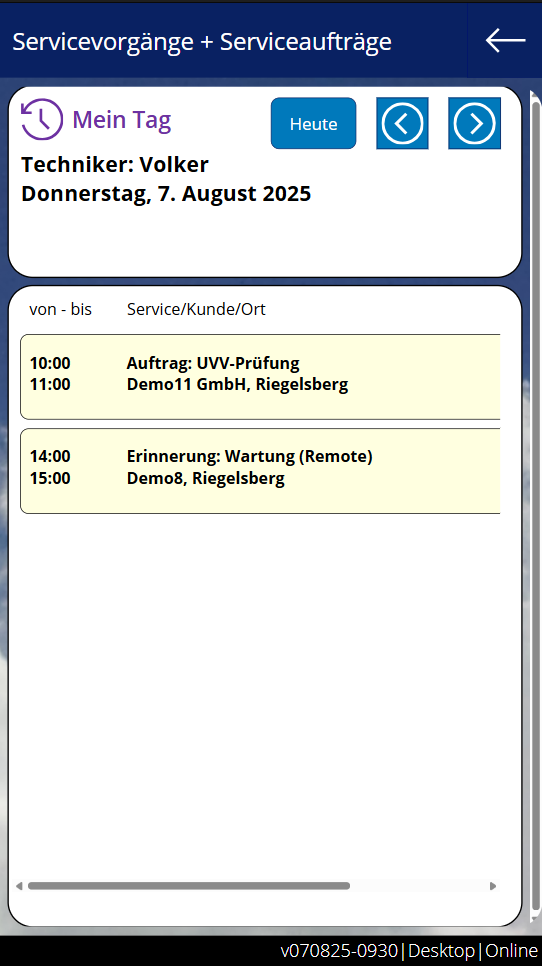
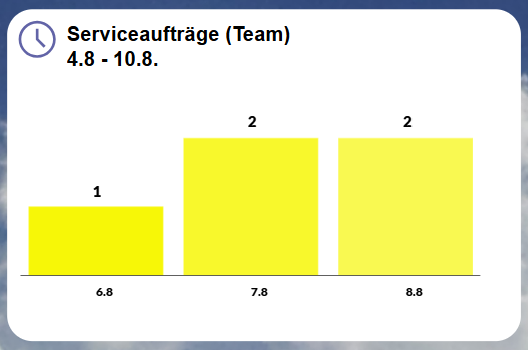
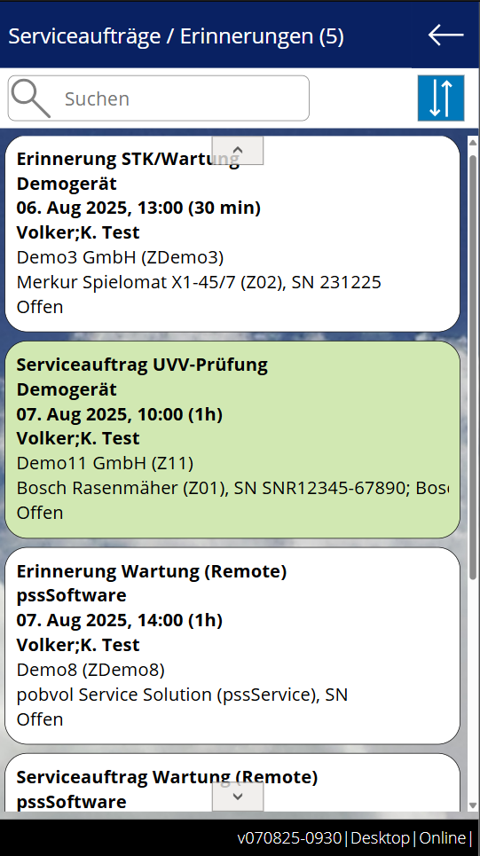

Benutzerhandbuch
pobvol Service Solution
Power App pssService Phone
Stand: 9'25
Deutsch /
English
Benutzerhandbuch
pobvol Service Solution
Power App pssService Phone
Stand: 9'25
Deutsch /
English
Serviceaufträge sind mit den Kunden abgestimmte Termine. Erinnerungen helfen dabei, zukünftige Servicetermine nicht zu vergessen.
Die Daten werden von Benutzern der Gruppe "Serviceaufträge" in der Power App pssService Board angelegt, angepasst oder gelöscht. Auch die Lösung erstellt automatisch eine Erinnerung, sobald ein Servicebericht der Serviceart Prüfung, Kontrolle, Wartung genehmigt wird.
Gespeichert werden die Daten in den SharePoint-Listen (SP-Listen) "Serviceauftraege" und "ServiceauftraegeP". Serviceaufträge werden zusätzlich in einem Outlook-Kalender gespeichert. Outlook sendet diese Termine dann an die Techniker und wenn aktiviert, auch an die Kunden.
In der Power App pssService Phone werden offene Aufträge / Erinnerungen nur gelistet, eine Erfassung ist nicht möglich. Als Offen gelten diese solange, bis für alle zugeordneten Geräte ein Servicevorgang angelegt wurde.
Hinweis: Die Verwaltung Ihrer Servicetermine kann weiterhin wie bisher erfolgen, bspw. in Outlook oder über Excel-Listen. Die App muss nicht dazu benutzt werden. Es hilft aber, da voll integriert.
Chart: Meine Woche
Chart: Serviceaufträge (Team)
Auftragsdaten
Kundeninventar
Auftraggeber
Anlagen
Top ↑
Der StartScreen der App pssService Phone zeigt in einem Balkendiagramm für den ausgewählten Zeitraum, pro Tag
Ein Klick auf einen Balken im Diagramm öffnet den Screen "Mein Tag" und blendet die offenen Termine, die erfassten Vorgänge und Rückreisen für den ausgewählten Tag ein.
Mit einem Klick auf einen Auftrag / Erinnerung wird der Screen "Serviceauftrag" eingeblendet.
Top ↑
Der StartScreen der App pssService Phone zeigt in einem Balkendiagramm für den ausgewählten Zeitraum die Anzahl der offenen Serviceaufträge und Erinnerungen des Teams pro Tag. Der Zeitraum wird über das Chart "Meine Woche" bestimmt. Gezählt werden die Daten des Teams. Wurde die App mittels Power Apps Mobile gestartet, werden die Daten der aktuellen Woche im Cache gespeichert und stehen auch Offline zur Verfügung.
Ein Klick auf das Diagramm öffnet die "Auftragsübersicht". Gelistet werden alle offenen Aufträge und Erinnerungen des Teams für den im Diagramm angezeigten Zeitraum.
Mit einem Klick auf einen Eintrag wird der Screen "Serviceauftrag" eingeblendet.
Top ↑
Top ↑